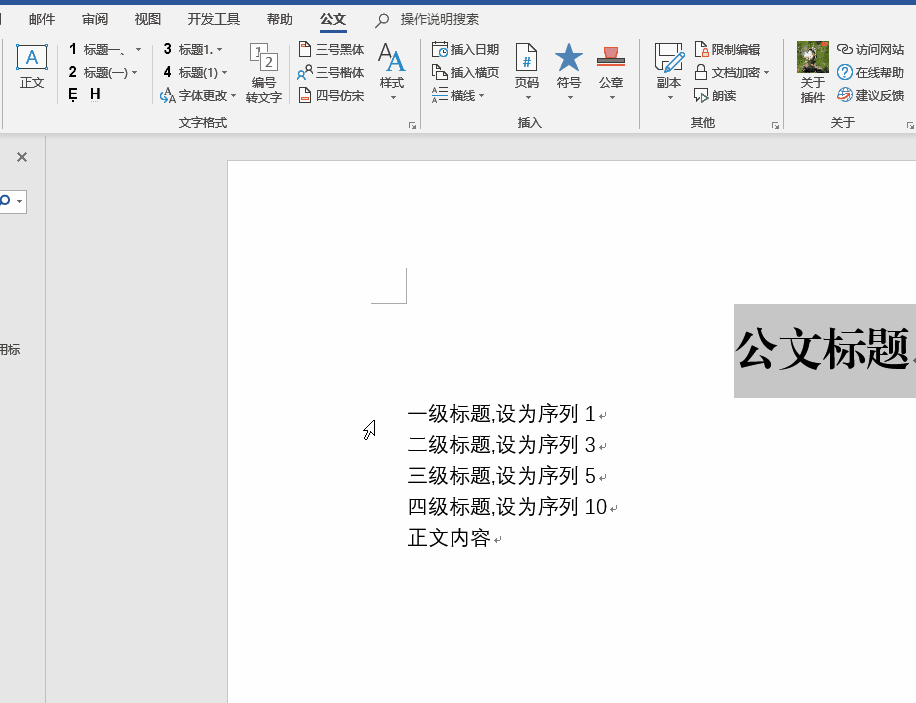
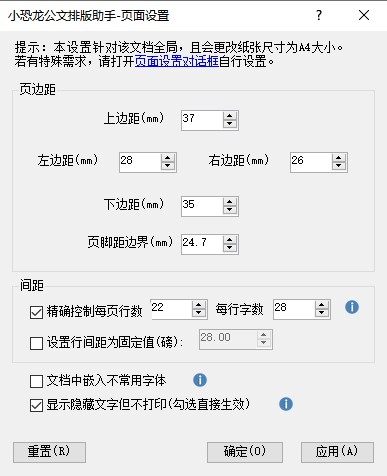
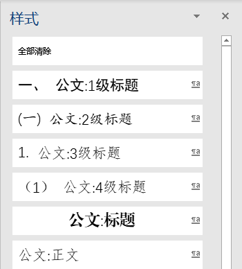
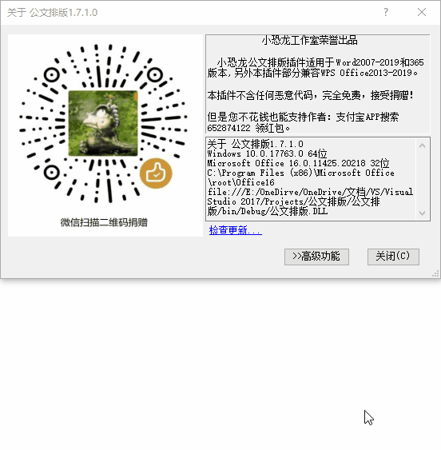

一键页面版式
按国标设置页边距、每页行数与每行字数，嵌入不常用字体。设置自动保存，无需每次重复调整。
从页面版式到红头版记，从文字清理到 VBA 自动化，把公文排版里最费时的重复动作都收进工具栏。
按国标设置页边距、每页行数与每行字数，嵌入不常用字体。设置自动保存，无需每次重复调整。
一至四级公文标题、正文格式快速套用，一键生成公文样式表，配合样式侧栏做段落级排版。
断行重排、删除空白与多余空行、全半角替换、换行转回车，尤其适合处理来自 PDF 或网页的文字。
红头、红线、版记线、装订线、居中/居右/外侧页码、公文格式日期、六角括号与★等常用符号。
同目录一键生成 PDF / doc / 图片副本，快速设置密码与读写权限，朗读功能辅助校对。
即用即走，脚本不写入文档；代码可见、可改、可分享，把重复劳动交给脚本完成。
插件在 Word / WPS 中以功能区分组的形式融入，所有按钮都带屏幕提示。

选中文字后一键套用一至四级公文标题与正文格式，动图演示。

页边距、行数页数、行间距与嵌入字体，一次设定长期生效。

一键生成常用公文样式，通过样式侧栏快速设置段落格式。

为每级公文字体指定名称与字号，并查看版本、检查更新。
首次安装需要先导入签名证书，之后安装程序会自动完成部署与运行库准备。
从下方任一网盘通道下载最新版安装包，解压到本地。
运行「首次安装导入证书.bat」，出现证书导入成功的提示后再继续。
安装完成后打开 Word / WPS，功能区即出现「公文」分组。
内网用户：智能安装版会从微软官网下载组件，内网环境请提前单独下载并安装附加组件。
杀软提示：作者承诺源码开放、不含任何恶意代码；如需排查，可提交 360 官方误杀申报，或在确认官网下载的前提下临时关闭杀毒软件。
原站点按入门、功能、脚本、问答、日志组织，这里保留同样的结构，并改成更适合检索的阅读版式。
最新版本 v3.8.0.0（2026年4月13日）。如遇下载限速，可换用其他通道；源码可在 GitHub 获取。
附加组件：内网或无法访问微软下载中心时，请先单独下载并安装附加组件，再进行插件安装。
Word 2007：v1.0.8.3 为最后支持版本，且提供内置运行库的离线安装版。
插件一直免费开源。如果它帮你省下了加班的夜晚，可以用微信扫码随意打赏。
赞赏仅代表心意，不影响任何功能的使用。双击插件里的赞赏码，还可以打开专用工具修改默认配置文件。
源码与讨论：github.com/xkonglong/gw